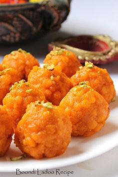

Boondi ke Ladoo!

Boondi Laddu are sweet spherical treats made by combining lovely little bits of fried and sugar-soaked batter (made with gram flour/besan) with seeds and fragrant spices. Each bite is a delightful blend of smooth, soft, and melt-in-the mouth for a snack or dessert you can’t get enough of!
Ingredients:
1.5 cups besan (gram flour)
2 pinches of crushed saffron
1 cup + 1 tablespoon water
½ teaspoon cardamom powder
Steps:
Step 1 First, add 1.5 cups besan (gram flour) and 2 pinches of crushed saffron or saffron powder to a mixing bowl.
Step 2 Add 1 cup + 1 tablespoon water and whisk to make a smooth batter without any lumps.
Step 3 Test the batter
Step 4 Fry the boondi(drops) of the batter
Step 5 Soak them in the sugar syrup
Step 6 Make ladoos out of the boondi now, especially when they are hot
Step 6 Cool them and now eat them before your brother comes to ask his share